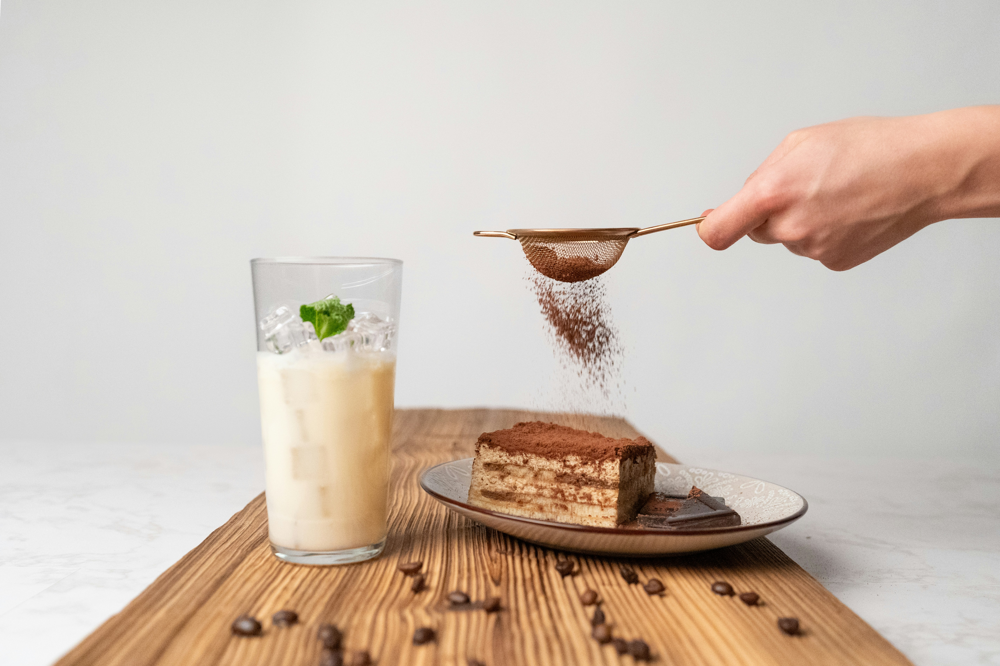

Tiramisu Recipe

Description
Tiramisu is the iconic Italian dessert, famous for its mascarpone cream and coffee-soaked ladyfingers.
Ingredients (for 6 serves)
- 250g mascarpone cheese
- 3 ultra-fresh eggs
- 80g granulated sugar
- 1 packet vanilla sugar
- 24 ladyfingers
- 25cl strong black coffee
- 2 tbsp unsweetened cocoa powder
- (Optional) 2 tbsp Amaretto or Marsala wine added to coffee
Instructions
- Separate the egg whites from the yolks.
- Whisk the yolks with the granulated sugar and vanilla sugar until the mixture becomes
pale and frothy
- Add the mascarpone to the yolk mixture, then whisk vigorously until smooth and
lump-free.
- Whip the egg whites with a pinch of salt until stiff peaks form.
- Gently fold the whipped egg whites into the mascarpone cream using a spatula, lifting
from the bottom so they don't deflate.
- Quickly dip the ladyfingers into the cooled coffee (do not soak them for too long).
- Assemble in a baking dish or individual glasses:
- A first layer of soaked ladyfingers.
- A layer of mascarpone cream.
- Repeat the process (finish with a cream layer).
- Refrigerate for at least 4 hours (ideally 12 to 24 hours for the best texture).
- Dust with cocoa powder just before serving.
Odin Recipes